Help¶
Freya help¶
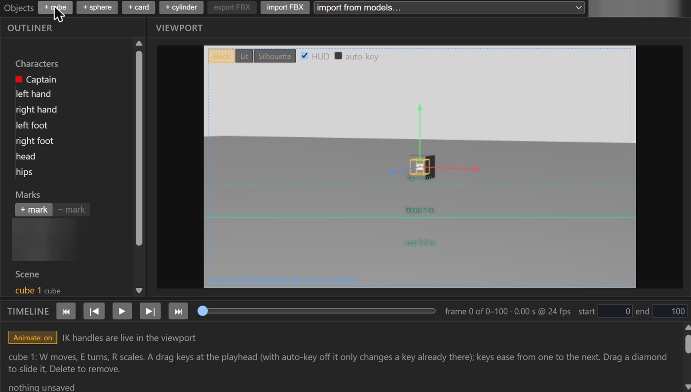
Help documents that exist¶
Read-only list of the Freya and previs documents in the code repo (paths as text; open them from disk). Found by searching D:\repos\coyote-frame-fixer for README files and docs\*.md that mention Freya or previs, 2026-10-23.
| Document | Path |
|---|---|
| Freya (repo README) | D:\repos\coyote-frame-fixer\README.md |
| backend | D:\repos\coyote-frame-fixer\backend\README.md |
| Coyote — Frame Fixer Web App: Development Plan | D:\repos\coyote-frame-fixer\docs\Coyote_frame_fixer_plan.md |
| The camera as a selectable, keyable object in Freya | D:\repos\coyote-frame-fixer\docs\FREYA_camera_as_an_object.md |
| A control in Freya for the clean (non-UI) render | D:\repos\coyote-frame-fixer\docs\FREYA_clean_render_control.md |
| A WebGL capture render path | D:\repos\coyote-frame-fixer\docs\FREYA_webgl_capture_render_path.md |
Pose description format — for pose_prompt |
D:\repos\coyote-frame-fixer\docs\POSE_DESCRIPTION_FORMAT.md |
| Pre-registered usability suite — previs animation controls | D:\repos\coyote-frame-fixer\docs\USABILITY_SUITE_previs_animation_eddy_2026-10-10.md |
How-tos¶
Written by Adam, accurate as of 2026-10-23.
Rename. Double-click an object or set piece name in the Outliner, or select it and press F2. Type; Enter keeps it, Escape cancels. Ctrl+Z undoes. A name already used, or an empty one, is refused with a log line.
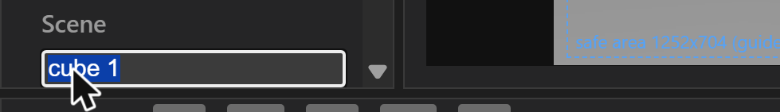
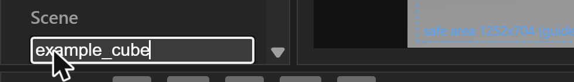
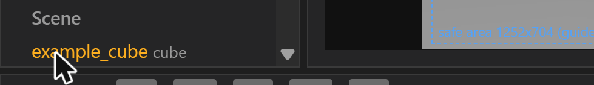
Delete. Select an object, set piece or mark (in the Outliner or the viewport) and press Delete. Ctrl+Z puts it back; for objects there is also "Undo delete".
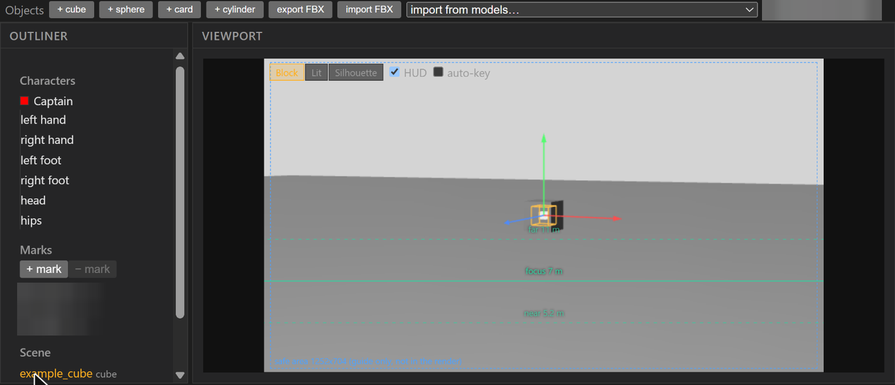
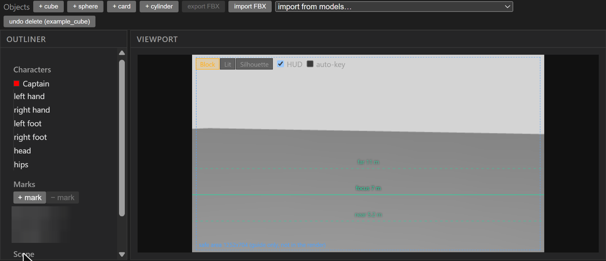
Colour. Select a set piece or object; in Properties use the Colour swatch. "Grey" removes the colour. Colour is stored linear and shows in the Block and Lit views. Uncoloured things look as they always did.
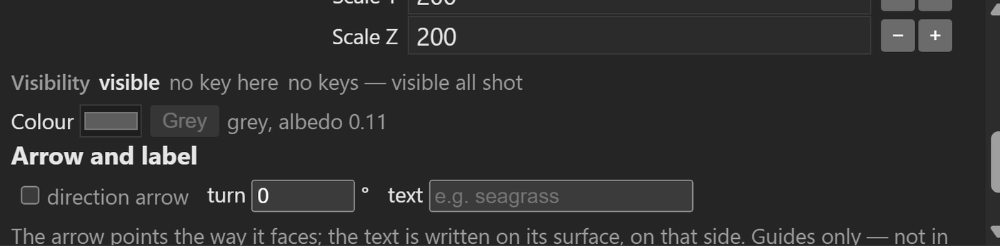
Viewport views. The buttons at the top of the viewport switch between Block, Lit and Silhouette.
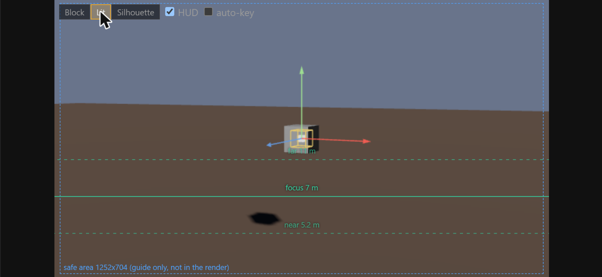
Start from shot. On a shot with no saved file, the Direct panel shows "Start from shot". Type the shot to copy (for example m05_02_03), pick the file (main or a saved version), press Start, then "Copy into <shot> and save". It copies set pieces, props, marks, camera (static), lights, exposure and cast; it does not copy takes, keyposes, in-betweens or hand keys. The source shot is not changed.
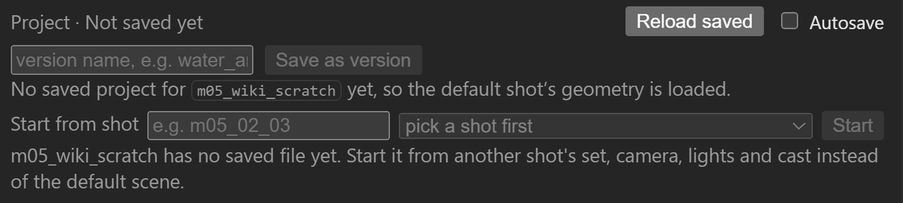
Save as version. In the Direct panel type a version name and press "Save as version". It writes <shot>.freya-previs.<name>.json beside the main file and never overwrites. Open a version with ?version=<file name> in the URL.
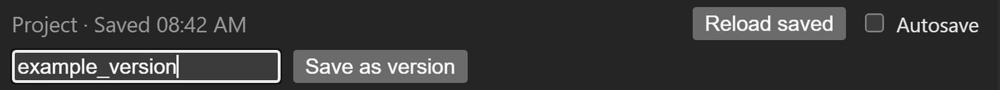
Takes as layers. Every take is a layer over the performance (solve + keyposes + in-betweens + hand keys). Each take row has an on/off box, a weight field (0 to 1, default 1) and "+ key" / "- key". Weight keys show as blue diamonds on the take's track and ease between keys. Lower lanes mix over higher ones. Unticked takes are not mixed, whatever their keys say.
Head IK handle. Select "head" in the Outliner. Dragging leans or nods the head on the neck (about 13 cm reach); rotating turns the head. The jaw and eyes follow.
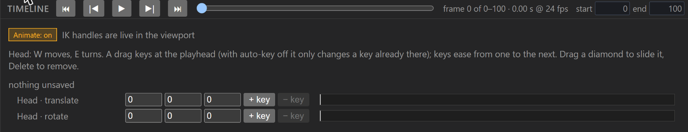
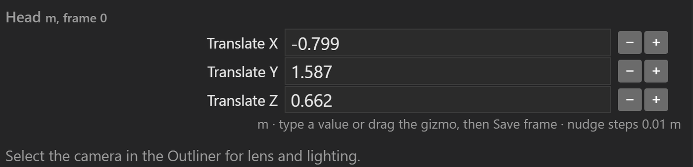
Hips (whole figure) key. Moves and turns the whole figure to where it was keyed, carrying the current pose.
Worked examples¶
Drafted by Sam from Freya's own labels, tooltips and warnings, 25 Oct. [not run] marks a step read from the screen but not run; none of the three was run end to end.
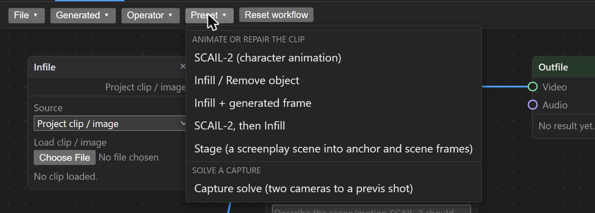
Solve a capture into a previs shot¶
Two videos of one performance, from two cameras, become motion for a character in a previs shot.
- Open the Workflow tab. Press Preset and choose Capture solve (two cameras to a previs shot) under "Solve a capture". You get two Infile nodes, a Solve capture node (Camera A, Camera B) and a Previs shot node.
- In each Infile, leave Source on Video file and press Choose File. Frame size is read from the file. [not run]
- In Solve capture, for each camera set Focal is (35mm equivalent, actual focal in mm, or pixels), then the focal value, the camera Height m (floor to camera) and the Frame offset between the two videos. Without a focal there is no camera matrix; without a height the solve has no vertical. Freya warns about both on the node. [not run]
- Click each camera's picture to place markers. Mark the same thing in both cameras and give it the same name; type the real distance once per pair. Freya asks for at least two paired, measured points: one sets the scale, the second checks it. [not run]
- Press Run solve (it stays unavailable until the warnings are cleared). [not run]
- In the Previs shot node set Shot, Actor and Deliver (Whole capture or Keyposes only). The motion is written to that shot's actor motion file. [not run]
- Open the shot in the Previs tab, select the character in the Outliner, and in Properties use Solve → Import solve… if the motion is not already attached. Choose frames to use as keyposes from the keypose lane's "from" list. [not run: Import solve…]
Cost: no cost is shown on the solve nodes; where it runs is not confirmed.
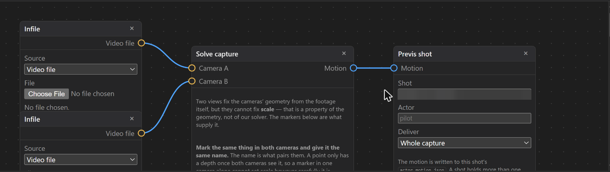
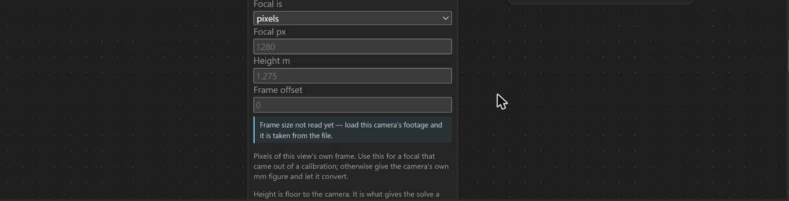
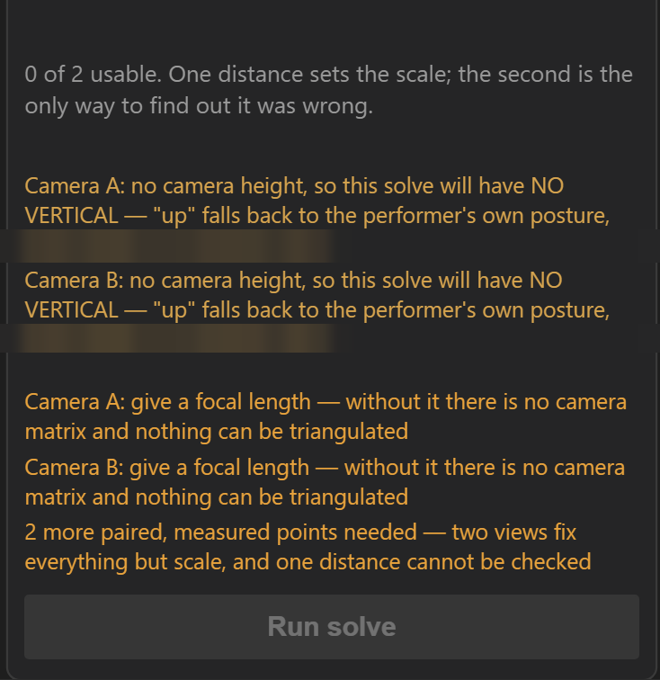
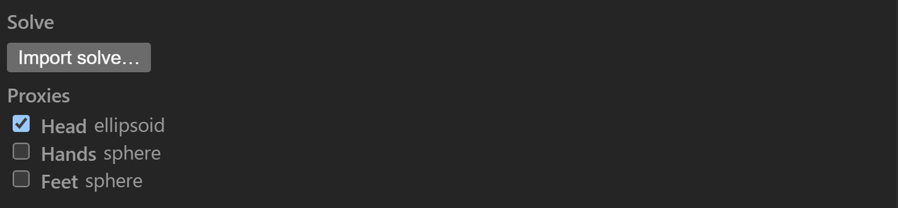
SCAIL-2 character animation¶
A reference picture or clip is animated to follow a driving video.
- Workflow tab → Preset → SCAIL-2 (character animation). You get an Infile (the reference), a second Infile set to Video file (the driving video), the SCAIL-2 node and an Outfile.
- In the first Infile load the reference with Load clip / image (or Load Clip/Image in the top bar). In the second press Choose File and pick the driving video.
- In SCAIL-2 leave Backend on RunPod (rented GPU, self-hosted). Type a short description of the scene and motion in Prompt (general words, one or two sentences).
- Set Subject type (human, animal or object) and Resolution (512p up to 1080p, or custom). The optional Extra references and Environment inputs can stay empty.
- Press Run. It stays greyed out and lists what is missing: "Choose the driving video file", "Load a clip or image in the Reference node", "Enter a prompt". [Run not pressed]
- The video appears in Outfile and in the Result tab on the right. To clean it up, use Operator → Infill / Remove object or the preset SCAIL-2, then Infill. [not run]
Cost: each Run uses a rented RunPod GPU and costs money; check the cost with the project owner before pressing Run.
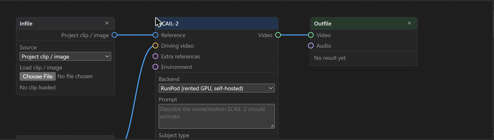
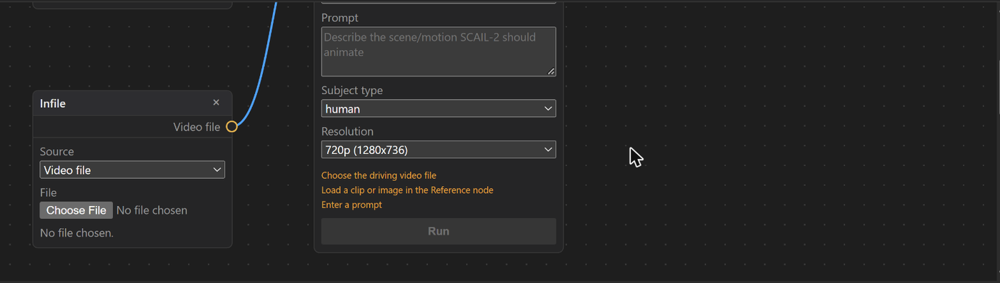
Regenerate an animation with Kimodo¶
Route A, whole shot.
- Previs tab, open the shot. In the Direct panel edit Describe what happens in the shot (a short motion description with a rough timing).
- Beside Generate animation there are two lists. The first chooses how the description is read (Auto (Gemini), Offline rules, Gemini, Claude (no key)). The second chooses the motion engine (Procedural walk or Kimodo); make sure it reads Kimodo, which is how it opens.
- Press Generate animation. To regenerate, change the description and press it again. [not run; whether the result replaces the earlier one or is kept as a take is not confirmed]
- Keep the result with Save as version under a new name; never overwrite the main.
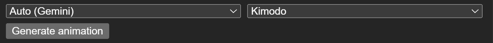
Route B, between two poses (as in Kimodo in-betweens below).
- Turn Animate on (bottom left of the timeline) and select the character in the Outliner. The timeline shows the keypose lane.
- Put the playhead where a pose should play, choose the source frame in from, press + keypose f<n> ("lift solve frame n and place it at the playhead"). Repeat for the second pose.
- Select exactly two keyposes on the lane; + in-between becomes available. It makes a block and does not generate. [button state confirmed; making a block was not completed]
- Generate the block from the in-between controls. [not run; the exact Generate / Regenerate label was not seen] Then Save performance as take.
Cost: no rented GPU is named in these controls; see Kimodo in-betweens for time and memory from earlier runs.
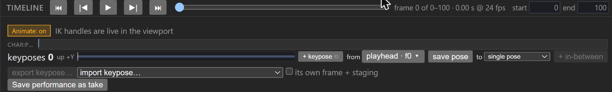
Not confirmed yet
Where the capture solve runs and whether it costs anything; what Generate animation with Kimodo does to an existing animation (replace or keep); the in-between block's Generate label; Import solve… was seen but not pressed.
Freya scene work¶
Everything is done in the Freya UI. Use Save as version under a new name; main files are never overwritten. A missing control is requested from Adam, never scripted.
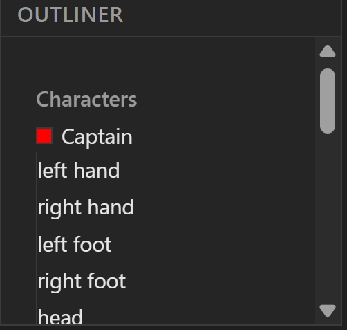
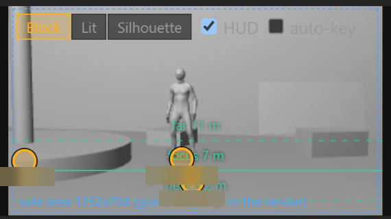
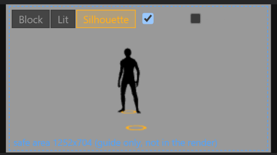
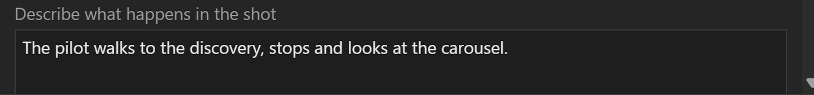
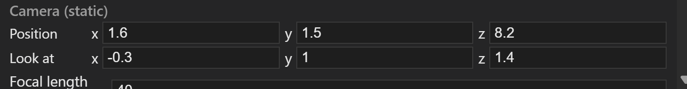
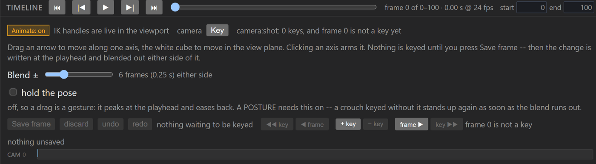
Sunburst storyboards¶
From Sam, read from the board sidecars and the registry.
- Model and settings. Leonardo GPT Image 2.5 ("Sunburst"), Style None, 16:9, Small 1376x768, quantity 1. Prompt enhance off (it is greyed out when references are attached).
- References, in order: the scene's anchor START frame, the anchor END frame, then the canon face sheet, used for her features only, never its drawing style.
- Prompt shape: a one-line brief, then labelled blocks: IN FRAME, THE LENS SEES, WHAT HAPPENS, CAMERA (lens, height, distance), LIGHT, set notes, the character's DESIGN, and a closing line excluding text, captions, borders and watermarks. Each reference image's role is stated explicitly.
- Process (Leal, 22 Oct): the chairs draw anchors in Sunburst, Leal edits them himself, and only his edited pictures go in.
- Approval: only boards Leal approves in his own typed words count. "Good for now" is not approval. Superseded boards stay on disk and are never shown.
- Filing:
shots\<shot id>\boards\<shot id>_<START|END>_<version>_<date>.jpgplus a.txtsidecar, and an entry in that shot's "Boards (approved)" line of the shot table (file, version, approval date, approver's words, generation id, sha256), which Sam also records in the registry. A re-approval strikes the old entry at its own site and adds a new one. The sha256 is taken from the saved G: file.
The Leonardo panel¶
From Adam, from runs on 22-23 Oct.
- Click path: app.leonardo.ai, Image tab; Model "GPT Image 2.5 Sunburst"; Style None; Image Dimensions 16:9 with Small (1376x768); Number of generations 1. The image icon left of the prompt opens "Image Reference", then Select Media, where "Upload an image" adds a file. Type the prompt; Generate shows the credit cost beside it.
- The image-reference trap: the panel can silently keep a leftover image reference (and settings such as the quantity) from an earlier session. It shows as a small thumbnail under the prompt, and its remove X appears only on hover. Before generating, check the thumbnail is the one you intend and that the credit figure on Generate is what one image should cost.
- The Generate button moves down as the prompt grows, so re-locate it after typing; a click on its old position does nothing.
- Balance floor: do not spend below the balance floor Leal has set.
To be written¶
Still open
The frame schema used to draw boards. To be written by the chairs; not filled in here.
Kimodo in-betweens¶
Facts from Sam, plus Adam.
- Kimodo outputs 30 fps; Freya resamples to 24 fps. 30-joint SOMA skeleton. Clip maximum 10 s.
- In Freya: keyposes are lifted from the solve. Choose the source frame in the keypose lane's "from" list (or follow the playhead), place the playhead where it should play, then "+ keypose". Select two keyposes and "+ in-between" to make a block; making a block does not generate. Generate it from the in-between controls; the per-keypose checkboxes decide whether the conditioner describes that keypose in the prompt.
- Each in-between is placed on its keyposes' own floor height, so feet stay on the ground between poses.
- Time and memory: about 2 to 3.5 minutes and about 16 GB of RAM per new prompt, from earlier runs. Not re-measured on 2026-10-23.
- Avoid: keys and takes on top can hide a new keypose. A take mixed at weight 1, or a hips (whole figure) key on that frame, covers it. Untick takes or lower their weight while staging.
Shot id rules¶
The shot-id rules and the list of renumbered ids are on Shot ids. Every shot's data, lengths and approved boards are on the Shot table, which is the authority for sequence m05.